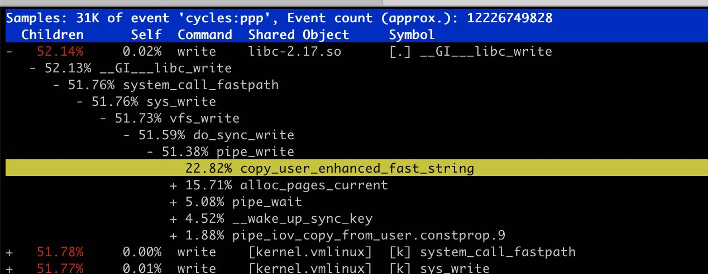
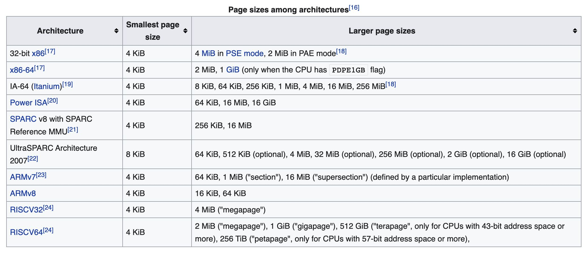
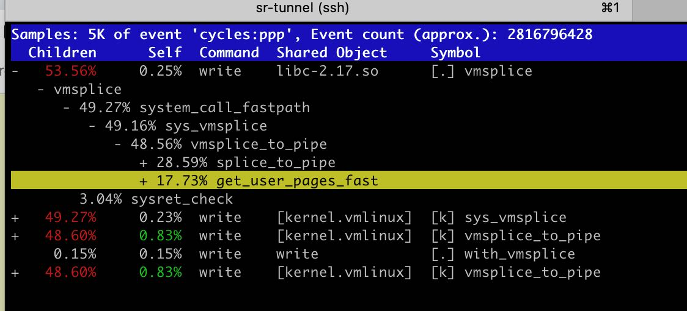

优化Linux Pipe案例分析
https://mazzo.li/posts/fast-pipes.html
大致看了下，我觉得最主要的优化就是两点：使用splice减少user/kernel mode之间的data copy, 以及使用THP(transparent huge page)来减少TLB miss次数。
下面数据是我在开发机器上得到的，绝对数值上看差不多是作者得到的一半，从sysbench测试得到的memory read bandwidth数值也是文章中的一半。
sandbox-cloud :: ~/repo/pipes-speed-test ‹master*› » sudo ./write| ./read 2.5GiB/s, 256KiB buffer, 40960 iterations (10GiB piped) sandbox-cloud :: ~/repo/pipes-speed-test ‹master*› » sudo ./write --write_with_vmsplice | ./read 8.9GiB/s, 256KiB buffer, 40960 iterations (10GiB piped) sandbox-cloud :: ~/repo/pipes-speed-test ‹master*› » sudo ./write --write_with_vmsplice | ./read --read_with_splice 17.3GiB/s, 256KiB buffer, 40960 iterations (10GiB piped) sandbox-cloud :: ~/repo/pipes-speed-test ‹master*› » sudo ./write --write_with_vmsplice --huge_page | ./read --read_with_splice 21.9GiB/s, 256KiB buffer, 40960 iterations (10GiB piped) sandbox-cloud :: ~/repo/pipes-speed-test ‹master*› » sudo taskset -c 100 ./write --write_with_vmsplice --huge_page | taskset -c 101 ./read --read_with_splice 29.2GiB/s, 256KiB buffer, 40960 iterations (10GiB piped) sandbox-cloud :: ~/repo/pipes-speed-test ‹master*› » sysbench memory --memory-block-size=1G --memory-oper=read --threads=1 run sysbench 1.0.17 (using system LuaJIT 2.0.4) 73728.00 MiB transferred (7286.42 MiB/sec)
为了避免user/kernel之间的data copy, 我们可以使用splice/vmsplice来搬运“数据”，不过实际上我们搬运的是指针。vmsplice可以直接将指针内容写入到fd中，而在pipe场景下面实际上就是写入到了pipe buffer中，然后等待另外一端读取出来。按照vmsplice文档说明（https://man7.org/linux/man-pages/man2/vmsplice.2.html） 里面有个SPLICE_F_GIFT参数表明这个user pages之后不在使用，而在另外一端可以直接使用 splice （https://man7.org/linux/man-pages/man2/splice.2.html） 配合SPLICE_F_MOVE直接move user pages而不是copy user pages. 另外这个page最好使用mmap来分配确保是page对齐，而不是使用malloc.
我始终感觉这里面user page的生命周期是比较奇怪的，比如在write这段开辟的user page, 如果MOVE到了read段，那么谁来释放这块内存？如果还是write端的话，那么必须有种机制来确保read段这边已经消费完毕了。在这个场景下面比较容易做到，因为pipe有个buffer上限，可以通过 /proc/sys/fs/pipe-max-size 或者是 F_SETPIPE_SZ 来进行设置，使用类似double buffer的方式，每个buffer都是pipe max size大小，当使用第二段的时候可以确保第一段已经使用完毕。
这个优化的线索来源于perf中 copy_user_enhanced_fast_string.

使用THP的好处是可以减少TLB miss. 在Linux下面HugePage分为两种：标准大页（huge pages）和透明大页(transparent huge pages) https://plantegg.github.io/2020/11/15/Linux%E5%86%85%E5%AD%98--HugePage/ 看上去想直接使用使用标准大页好像还有点麻烦 （https://www.kernel.org/doc/html/latest/admin-guide/mm/hugetlbpage.html%EF%BC%89%E8%80%8C%E4%BD%BF%E7%94%A8THP%E7%9A%84%E8%AF%9D%E4%BD%BF%E7%94%A8 madvise / MADV_HUGEPAGE 就行（可能如果有kernel 大页的话也会直接使用？）
下图 https://en.wikipedia.org/wiki/Page_(computer_memory)#Multiple_page_sizes 是各种架构下面HP的大小，可以看到x86-64还支持1G（不知道THP能不能到1G）。x86-64使用4级page-table（地址存储在CR3寄存器上）, 每一级有9个bit，最后面12个bit用于定位page内部offset, 最高位的16bits不使用（实际使用48bits）

因为kernel里面始终是按照page这个概念来处理的，所以为了适应hugepage, page结构上做了某些调整如下图。head page存储的是实际物理地址，而之后的tail page则存储了head page来辅助定位物理地址。
However, the reason for the improvements is not totally obvious. Naively, we might think that by using huge pages struct page will just refer to a 2MiB page, rather than 4KiB.
Sadly this is not the case: the kernel code assumes everywhere that a struct page refers to a page of the “standard” size for the current architecture. The way this works for huge pages (and in general for what Linux calls “compound pages”) is that a “head” struct page contains the actual information about the backing physical page, with successive “tail” pages just containing a pointer to the head page.
So to represent 2MiB huge page we’ll have 1 “head” struct page, and up to 511 “tail” struct pages. Or in the case of our 128KiB buffer, 31 tail struct pages:
这个优化的线索来源于 perf 中 get_user_pages_fast , 从文档上看像是要把 user page 在物理内存中pin住 https://github.com/torvalds/linux/blob/f443e374ae131c168a065ea1748feac6b2e76613/mm/gup.c#L2945 增加这个优化之后如果perf stat -e dTLB-load-misses，可以看到减少了接近50%.
